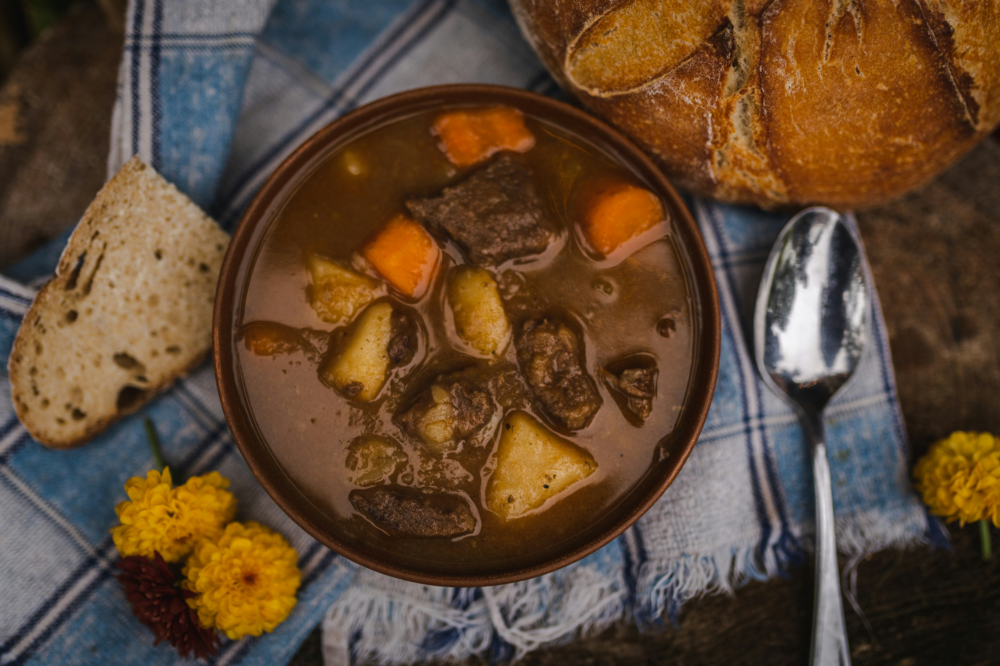

Home
Beef Stew

Description
Recipe for my dear old dad, who is feeling a little poorly at the moment.
Recipe from Well Plated by Erin.
Ingredients
- 900g boneless beef chuck
- 3 tbsp extra virgin olive oil
- 2 tsp kosher salt
- 1/2 tsp kosher salt
- 1 large yellow onion
- 2 cloves garlic
- 450g carrots
- 1 large potato
- 1 can low-sodium beef broth
- 1 tbsp Worcestershire sauce
- 1 bay leaf
- 1 tsp dried thyme
- 1 can tomato sauce
- 2 tbsp cornstarch
- 2 tbsp water
- 1 1/2 cups fresh or frozen peas
- Fresh parsley or rosemary, optional
Steps
- Cut the chuck roast into 1 1/2-inch cubes, removing any large, tough pieces of fat or gristle.
-
Turn the Instant Pot to SAUTE. Add 1 tablespoon of the oil. Once the oil is hot and shimmering (a drop
of water should sizzle if added to the surface of the pot), add half of the beef, 1 teaspoon salt,
and 1/4 teaspoon pepper. The cubes should be in a single layer and not too crowded so that they brown
nicely. Let the cubes of beef cook undisturbed for 4 to 5 minutes (resist the urge to peek!), until
the bottom of the cubes develop a dark-brown crust and come away from the pan easily. Turn and
continue searing until dark and brown all over, about 4 additional minutes. Transfer the seared meat
to a clean plate or bowl. Add another 1 tablespoon of olive oil to the pot. Once hot, add the remaining
beef and remaining 1 teaspoon salt and 1/4 teaspoon pepper. Sear the remaining beef. If the pan gets too
dry, add a bit more oil as needed.
- While the meat browns, dice the yellow onion. Mince the garlic. Peel the carrots and cut them into 1/2-inch-thick diagonal slices.
- Remove the second batch of browned beef to the plate with the first batch. Add the remaining tablespoon of olive oil and the onion to the Instant Pot. Cook, stirring occasionally, until the onion begins to soften and brown, about 6 minutes.
- While the onion cooks, scrub and peel the potato and cut it into 3/4-inch chunks. If you haven’t finished cutting the carrots, do so now.
- Add the garlic to the Instant Pot. Cook, stirring constantly until fragrant, about 30 seconds. Add the beef broth and use a spoon to scrape the brown bits from the bottom of the pan. Make sure you remove every last bit of stuck-on food so that you don’t receive a “burn” warning.
- Stir in the carrots, potatoes, Worcestershire sauce, bay leaf, thyme, and the browned beef, along with any meat juices that have collected on the plate. Pour the tomato sauce on top. Do not stir again.
- Close and seal the Instant Pot. Cook on high pressure for 35 minutes, then allow the pressure to release naturally for 10 minutes. Vent the steam valve to release any remaining pressure, then carefully open the lid. Remove and discard the bay leaf.
- In a small bowl, whisk together the cornstarch and water to create a slurry. Add to the Instant Pot and stir until the stew thickens. Add the peas and stir to warm through. Serve hot, sprinkled with fresh parsley.